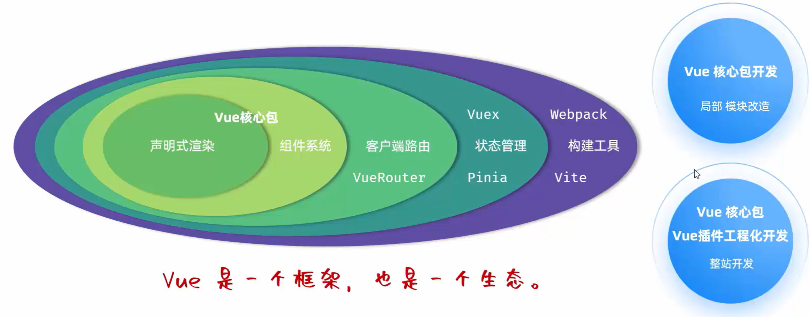
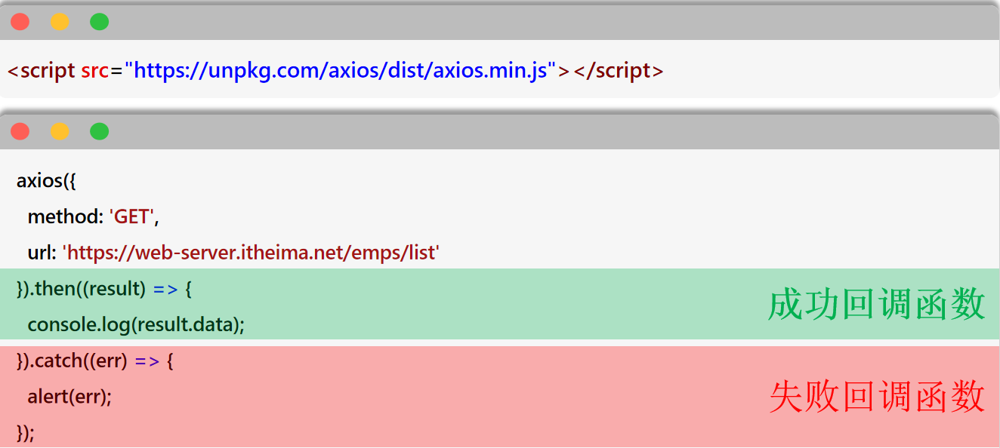

Vue
一、Vue
1.1 Vue 快速入门
Vue 简介：Vue 是一款用于构建用户界面的渐进式的 JavaScript 框架
- 构建用户界面：基于数据（如服务端返回的原始数据）渲染出用户看到的界面
- 渐进式：根据需求选择 Vue 提供的功能
- 框架：一套完整的项目解决方案，用于快速构建项目（大大提升前端项目的开发效率）
- Vue 官网

Vue 的使用步骤：
<body>
<!-- 3. 准备元素（div），被 Vue 控制 -->
<div id="app">
<!-- 通过插值表达式渲染页面 -->
<h1>{{message}}</h1>
<h1>{{count}}</h1>
</div>
<script type="module">
// 1. 引入 Vue 模块（通过 CDN 以及原生 ES 模块使用 Vue）
import { createApp } from 'https://unpkg.com/vue@3/dist/vue.esm-browser.js';
// 2. 创建 Vue 的应用实例，控制视图的元素
createApp({
data() {
// 准备数据
return {
message: 'Hello Vue',
count: 100
}
}
}).mount('#app');
</script>
</body>
1.2 Vue 常用指令
指令：HTML 标签上带有v-前缀的特殊属性，不同的指令具有不同的含义，可以实现不同的功能
<div>
<p v-xxx="..."></p>
</div>
v-for：
- 作用：列表渲染，遍历容器的元素或者对象的属性
- 语法：
<tr v-for="(item, index) in items" :key="item.id"> {{item}}</tr>
key: 唯一标识，推荐使用 id 作为 key
v-bind：
- 作用：动态为 HTML 标签绑定属性值
- 语法：
v-bind:属性名="属性值"
v-if：
- 作用：控制元素的显示和隐藏
- 语法：
v-if="表达式"、v-else-if="表达式"、v-else="表达式"，表达式为 true 才渲染 - 原理：基于条件判断，来控制创建或移除元素节点（条件渲染）
- 场景：不频繁切换
v-show：
- 作用：控制元素的显示和隐藏
- 语法：
v-show="表达式"，表达式为 true 才显示 - 原理：基于 CSS 样式 display 来控制显示与隐藏（渲染后条件显示）
- 场景：频繁切换
v-model：
- 作用：在表单元素上使用，双向数据绑定。可以方便的 获取 或 设置 表单项数据
- 语法：
v-model="变量名”
v-on：
- 作用：为 html 标签绑定事件（添加事件监听）
- 语法：
v-on:事件名="方法名"，简写为@事件名="..."
Vue 案例-员工列表：
点击展开完整代码
<!DOCTYPE html>
<html lang="zh-CN">
<head>
<meta charset="UTF-8">
<title>Tlias智能学习辅助系统</title>
<style>
/* 导航栏样式 */
.navbar {
background-color: #b5b3b3; /* 灰色背景 */
display: flex; /* flex弹性布局 */
justify-content: space-between; /* 左右对齐 */
padding: 10px; /* 内边距 */
align-items: center; /* 垂直居中 */
}
.navbar h1 {
margin: 0; /* 移除默认的上下外边距 */
font-weight: bold; /* 加粗 */
color: white;
/* 设置字体为楷体 */
font-family: "楷体";
}
.navbar a {
color: white; /* 链接颜色为白色 */
text-decoration: none; /* 移除下划线 */
}
/* 搜索表单样式 */
.search-form {
display: flex;
flex-wrap: nowrap;
align-items: center;
gap: 10px; /* 控件之间的间距 */
margin: 20px 0;
}
.search-form input[type="text"], .search-form select {
padding: 5px; /* 输入框内边距 */
width: 260px; /* 宽度 */
}
.search-form button {
padding: 5px 15px; /* 按钮内边距 */
}
/* 表格样式 */
table {
width: 100%;
border-collapse: collapse;
}
th, td {
border: 1px solid #ddd; /* 边框 */
padding: 8px; /* 单元格内边距 */
text-align: center; /* 左对齐 */
}
th {
background-color: #f2f2f2;
font-weight: bold;
}
.avatar {
width: 30px;
height: 30px;
}
/* 页脚样式 */
.footer {
background-color: #b5b3b3; /* 灰色背景 */
color: white; /* 白色文字 */
text-align: center; /* 居中文本 */
padding: 10px 0; /* 上下内边距 */
margin-top: 30px;
}
#container {
width: 80%; /* 宽度为80% */
margin: 0 auto; /* 水平居中 */
}
</style>
</head>
<body>
<div id="container">
<!-- 顶部导航栏 -->
<div class="navbar">
<h1>Tlias智能学习辅助系统</h1>
<a href="#">退出登录</a>
</div>
{{searchForm}}
<!-- 搜索表单区域 -->
<form class="search-form">
<label for="name">姓名：</label>
<input type="text" id="name" name="name" v-model="searchForm.name" placeholder="请输入姓名">
<label for="gender">性别：</label>
<select id="gender" name="gender" v-model="searchForm.gender">
<option value=""></option>
<option value="1">男</option>
<option value="2">女</option>
</select>
<label for="position">职位：</label>
<select id="position" name="position" v-model="searchForm.job">
<option value=""></option>
<option value="1">班主任</option>
<option value="2">讲师</option>
<option value="3">学工主管</option>
<option value="4">教研主管</option>
<option value="5">咨询师</option>
</select>
<button type="button" v-on:click="search">查询</button>
<button type="button" @click="clear">清空</button>
</form>
<!-- 表格展示区 -->
<table>
<!-- 表头 -->
<thead>
<tr>
<th>序号</th>
<th>姓名</th>
<th>性别</th>
<th>头像</th>
<th>职位</th>
<th>入职日期</th>
<th>最后操作时间</th>
<th>操作</th>
</tr>
</thead>
<!-- 表格主体内容 -->
<tbody>
<!-- key相当于主键？ -->
<tr v-for="(e, index) in empList" :key="e.id">
<td>{{index + 1}}</td>
<td>{{e.name}}</td>
<td>{{e.gender == 1?'男' : '女'}}</td>
<!-- 插值表达式是不能出现在标签内部 -->
<td><img class="avatar" v-bind:src="e.image" :alt="e.name"></td>
<!-- v-if: 控制元素的显示与隐藏 -->
<!-- 选择性渲染并显示，适用于不频繁切换的情况 -->
<td>
<span v-if="e.job == 1">班主任</span>
<span v-else-if="e.job == 2">讲师</span>
<span v-else-if="e.job == 3">学工主管</span>
<span v-else-if="e.job == 4">教研主管</span>
<span v-else-if="e.job == 5">咨询师</span>
<span v-else>其他</span>
</td>
<!-- v-show: 控制元素的显示与隐藏 -->
<!-- 全部渲染并选择性显示，适用于频繁切换的情况 -->
<!-- <td>
<span v-show="e.job == 1">班主任</span>
<span v-show="e.job == 2">讲师</span>
<span v-show="e.job == 3">学工主管</span>
<span v-show="e.job == 4">教研主管</span>
<span v-show="e.job == 5">咨询师</span>
</td> -->
<td>{{e.entrydate}}</td>
<td>{{e.updatetime}}</td>
<td class="action-buttons">
<button type="button">编辑</button>
<button type="button">删除</button>
</td>
</tr>
</tbody>
</table>
<!-- 页脚版权区域 -->
<footer class="footer">
<p>江苏传智播客教育科技股份有限公司</p>
<p>版权所有 Copyright 2006-2024 All Rights Reserved</p>
</footer>
</div>
<script type="module">
import { createApp } from 'https://unpkg.com/vue@3/dist/vue.esm-browser.js'
createApp({
data() {
return {
// 定义v-model绑定的表单数据对象(双向绑定，数据模型和视图互相影响)
searchForm: { //封装用户输入的查询条件
name: '',
gender: '',
job: ''
},
//定义v-for绑定的表格数据对象
empList: [
{ "id": 1,
"name": "谢逊",
"image": "https://web-framework.oss-cn-hangzhou.aliyuncs.com/2023/4.jpg",
"gender": 1,
"job": "1",
"entrydate": "2023-06-09",
"updatetime": "2024-09-30T14:59:38"
},
{
"id": 2,
"name": "韦一笑",
"image": "https://web-framework.oss-cn-hangzhou.aliyuncs.com/2023/1.jpg",
"gender": 1,
"job": "1",
"entrydate": "2020-05-09",
"updatetime": "2024-09-01T00:00:00"
},
{
"id": 3,
"name": "黛绮丝",
"image": "https://web-framework.oss-cn-hangzhou.aliyuncs.com/2023/2.jpg",
"gender": 2,
"job": "2",
"entrydate": "2021-06-01",
"updatetime": "2024-09-01T00:00:00"
}
]
}
},
//方法，用v-on:click="search"绑定
methods: {
search(){
//将搜索条件, 输出到控制台
console.log(this.searchForm);
},
clear(){
//清空表单项数据
this.searchForm = {name:'', gender:'', job:''}
}
},
}).mount('#container')
</script>
</body>
</html>
二、Ajax
2.1 Ajax
Ajax：Asynchronous JavaScript And XML，异步的 JavaScript 和 XML。
作用：
- 数据交换：通过 Ajax 可以给服务器发送请求，并获取服务器响应的数据。
- 异步交互：可以在不重新加载整个页面的情况下，与服务器交换数据并更新部分网页的技术，如：搜索联想、用户名是否可用的校验等等。
2.2 Axios
Axios：Axios 对原生的 Ajax 进行了封装，简化书写，快速开发。
步骤：
- 引入 Axios 的
.js文件（参照官网） - 使用 Axios 发送请求，并获取响应结果

method：请求方式，如GET、POSTurl：请求路径data：请求数据（method为POST时）params：发送请求时携带的 url 参数 如：...?key=val
<body>
<input type="button" value="获取数据GET" id="btnGet">
<input type="button" value="操作数据POST" id="btnPost">
<script src="js/axios.js"></script>
<script>
//发送GET请求
document.querySelector('#btnGet').addEventListener('click', () => {
//axios发起异步请求
axios({
url: 'https://mock.apifox.cn/m1/3083103-0-default/emps/list',
method: 'GET'
}).then((result) => { //成功回调函数
console.log(result.data);
}).catch((err) => { //失败回调函数
console.log(err);
})
})
//发送POST请求
document.querySelector('#btnPost').addEventListener('click', () => {
//axios发起异步请求
axios({
url: 'https://mock.apifox.cn/m1/3083103-0-default/emps/update',
method: 'POST',
data: 'id=1' //POST请求方式 , 请求体
}).then((result) => { //成功回调函数
console.log(result.data);
}).catch((err) => { //失败回调函数
console.log(err);
})
})
</script>
</body>
2.3 Axios 请求方式别名（推荐）
为了方便起见，Axios 已经为所有支持的请求方法提供了别名
格式：axios.请求方式(url [, data [, config]])
<body>
<input type="button" value="获取数据GET" id="btnGet">
<input type="button" value="操作数据POST" id="btnPost">
<script src="js/axios.js"></script>
<script>
//发送GET请求
document.querySelector('#btnGet').addEventListener('click', () => {
axios.get('https://mock.apifox.cn/m1/3083103-0-default/emps/list').then((result) => {
console.log(result.data);
})
.catch((err) => { //失败回调函数
console.log(err);
});
console.log('=========================='); // 这行比上面的先输出（异步交互）
})
//发送POST请求
document.querySelector('#btnPost').addEventListener('click', () => {
axios.post('https://mock.apifox.cn/m1/3083103-0-default/emps/update', 'id=1').then((result) => {
console.log(result.data);
});
})
</script>
</body>
2.4 Ajax 案例
<body>
// ...省略页面内容定义
<script src="js/axios.js"></script>
<script type="module">
import { createApp } from 'https://unpkg.com/vue@3/dist/vue.esm-browser.js'
createApp({
// data() 函数定义组件要用到的所有"响应式数据"
// 每个组件实例调用一次 data()，就得到一份全新独立的数据。保证每个组件实例的数据互相独立。
data() {
return {
searchForm: { //封装用户输入的查询条件
name: '',
gender: '',
job: ''
},
empList: [] // 员工列表
}
},
// methods 对象定义组件中的方法
methods: {
// async、await将异步变为同步
async search(){
// 发送ajax请求，获取数据
// 代码可读性、可维护性不强
// axios.get(`https://web-server.itheima.net/emps/list?name=${this.searchForm.name}&gender=${this.searchForm.gender}&job=${this.searchForm.job}`).then((result) => {
// this.empList = result.data.data;
// })
// console.log('===========================');
let result = await axios.get(`https://web-server.itheima.net/emps/list?name=${this.searchForm.name}&gender=${this.searchForm.gender}&job=${this.searchForm.job}`);
this.empList = result.data.data;
},
clear(){
//清空表单项数据
this.searchForm = {name:'', gender:'', job:''}
this.search()
}
},
// 生命周期-钩子函数 mounted
mounted(){
// 页面加载完成之后，自动发送 ajax 请求，获取数据
this.search()
}
}).mount('#container')
</script>
</body>
三、Vue 生命周期
生命周期：指一个对象从创建到销毁的整个过程。
生命周期的八个阶段：每触发一个生命周期事件，会自动执行一个生命周期方法（钩子）。

典型应用场景：在页面加载完毕时，发起异步请求，加载数据，渲染页面
<body>
// ...省略页面内容定义
<script src="js/axios.js"></script>
<script type="module">
import { createApp } from 'https://unpkg.com/vue@3/dist/vue.esm-browser.js'
createApp({
// ...省略 data() 函数 和 methods 对象
// 生命周期-钩子函数 mounted
mounted(){
// 页面加载完成之后，自动发送 ajax 请求，获取数据
this.search()
}
}).mount('#container')
</script>
</body>